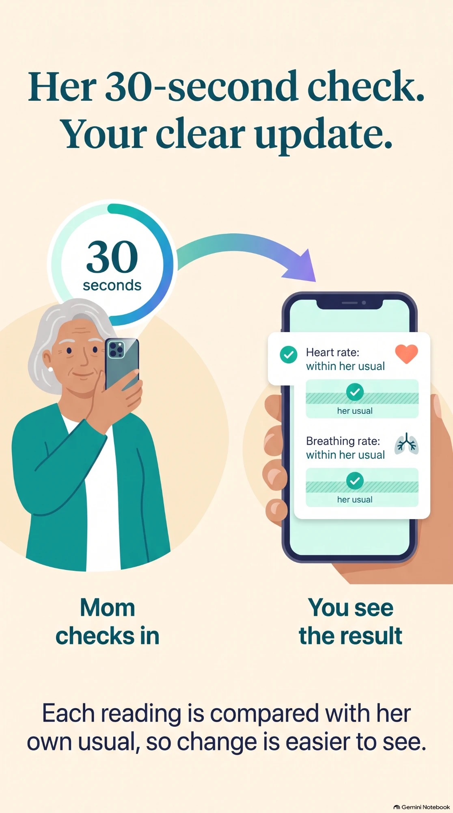

Aurora Care by Ragaven
Know how they’re really doing. Get help when it counts.
A 30-second check on your aging parent’s own phone gives you a daily picture of their vitals, medicines, and appointments, compared with their own usual.
For families caring for a parent who lives at home, and for the parent who wants to stay independent.


Daily picture
See the trends calls and texts miss.
A 30-second check on their phone shows how blood pressure, heart rate, and other vitals compare with their usual, and whether they are taking their medicines on schedule.
- Vitals come from the phone, watch, or band they already own. No extra hardware to buy.
- Each reading is compared with their own history and profile.
- Missed medicines show up as a pattern the family can see.

Help right away
Help arrives even when the phone is out of reach.
If they fall, leave a familiar area, or show vitals far outside their usual range, the people they chose get an alert. They can also call for help by voice from across the room by saying “Hey Siri, Aurora help,” as long as the phone is within earshot.
- No wearable or button needed for voice help.
- Alerts repeat every 5 minutes until someone responds.
- Safe-area alerts work when they have their phone with them.
Aurora Care does not replace clinicians, emergency services, or medical diagnosis.

One place
Everything to support their care, in one place.
Book the doctor or lab visit together and bring one report of vitals, medicines, and recent labs. Your loved one decides who sees what.
- A health summary for 7, 30, or 90 days, with a report to share with their doctor.
- Lab results read from a photo of the paper copy.
- Safe-area alerts sit alongside their vitals, labs, and medicines.
One-minute overview
See Aurora Care in a minute.
A daily 30-second check, a clear update for the family, and help when it’s needed.
Independence for them. Peace of mind for everyone who cares.
No extra device to buy. Just the phone they already know.
They decide who is in their circle and what each person sees.